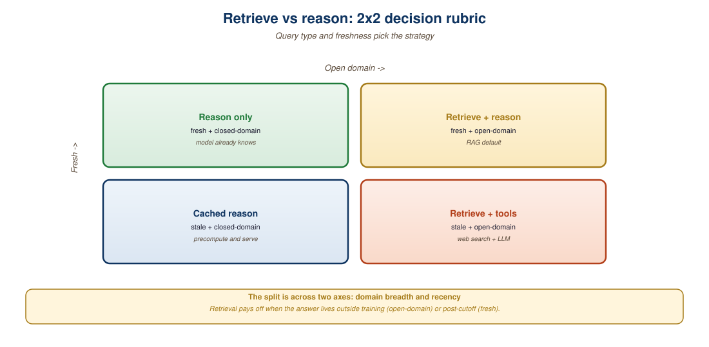

"The model knows everything in its weights. Retrieval is for everything else."
RAG axiom that holds for text and translates cleanly to multimodal
Not every multimodal query needs RAG. A frontier VLM like GPT-4o or Gemini 2.5 Pro already encodes vast world knowledge, and many vision tasks ("count the people in this image", "describe the chart") can be answered directly without retrieval. Retrieval pays off when the answer requires specific external content: private documents, time-sensitive data, large-scale visual catalogs. This section provides a decision rubric for choosing between direct reasoning, RAG, and hybrid strategies. We cover what signals tell you the model is hallucinating, how to design a routing layer, and the cost/quality math behind the choice.

42.3.1 The Four Patterns
Four production patterns cover the multimodal query space:
- Direct VLM: send the query (and any user-provided images) to a frontier multimodal model; trust its trained knowledge. Cheapest at the per-query level but limited to whatever the model has learned.
- Static RAG: retrieve top-k from a pre-built multimodal index, splice into the VLM prompt. The pattern from Section 33.2. Use for private or domain-specific corpora.
- Hybrid (RAG + reasoning): VLM first decides whether retrieval is needed (a "self-RAG" pattern); only fetches when its confidence is low or the query mentions specific entities.
- Agentic search: the VLM uses tools (web search, internal database, image search) iteratively to assemble context, similar to Section 24.1's agent patterns extended to multimodal queries.
42.3.2 When Direct VLM Wins
Direct VLM answers without retrieval are the right choice when:
- The query is self-contained: the user uploads an image and asks "what's in this picture?" No retrieval can improve on what the VLM sees directly.
- The knowledge is well within the model's training: identifying common objects, places, plants, animals; basic image manipulation requests; general factual visual questions.
- Latency budget is tight: an extra retrieval round-trip adds 100 to 500 ms; in real-time applications (voice agents, AR overlays), that may be unaffordable.
- Cost matters more than absolute quality: direct VLM is the cheapest pattern per query.
The empirical rule of thumb: if a knowledgeable human could answer your query just by looking at the image, the VLM probably can too. Save retrieval for queries that would stump that human without access to specific documents.
42.3.3 When RAG Wins
Retrieval is the right choice when:
- The answer is in private content: company documents, proprietary images, internal video archives. The VLM has never seen these.
- The content is time-sensitive: news photos, stock charts, current events imagery. The VLM's training cutoff is months to years stale.
- You need source attribution: regulatory or audit contexts where you must show which document or image the answer came from.
- Specific entities matter: "find me Dr. Smith's report on patient 12345" requires precise retrieval, not the VLM's parametric memory.
- The corpus is too large for in-context: a 100k-image catalog cannot fit in any prompt, so retrieval is forced.
The single most reliable signal that direct VLM is insufficient is hallucination. If your VLM regularly produces plausible-but-wrong answers on your task, you have a knowledge gap that RAG addresses. Specifically: confident answers with no factual grounding, made-up document references, made-up image details. If you see these patterns in spot-checks of your production traffic, add retrieval. If you don't, save the engineering effort.
42.3.4 When Hybrid Wins
Hybrid patterns (the VLM decides whether to retrieve) win when:
- Your traffic is mixed: some queries need retrieval, others don't. Routing avoids paying retrieval cost on every query.
- You have a budget for false positives: occasionally retrieving when you shouldn't have is fine, as long as you don't miss the cases where retrieval would have helped.
- The model can reliably self-assess: modern VLMs (GPT-4o, Gemini 2.5) are fairly good at recognizing "I don't know this" or "I would need to look this up", which makes the routing layer simpler.
The simplest hybrid is a router prompt: ask the VLM "should I retrieve external context to answer this, or do I have enough to answer directly?" before generating the final answer. Cost adds ~100 tokens per query; quality benefit on knowledge-heavy queries is substantial.
# A hybrid router that decides retrieve vs reason per query.
# Uses GPT-4o-mini to classify, then dispatches accordingly.
from openai import OpenAI
oai = OpenAI()
ROUTER_PROMPT = """Decide if answering this query needs retrieval over the user's
private image and document corpus, or if the question can be answered
from general knowledge and the directly attached media.
Respond with exactly one of:
DIRECT -- answerable from VLM knowledge and attached media
RAG -- needs retrieval from the private corpus
AGENT -- needs iterative search across multiple tools
Query: {query}"""
def route_and_answer(query, attachments=None):
# 1. Decide the path
classification = oai.chat.completions.create(
model="gpt-4o-mini",
messages=[{"role": "user",
"content": ROUTER_PROMPT.format(query=query)}],
max_tokens=10,
).choices[0].message.content.strip().upper()
# 2. Dispatch
if "DIRECT" in classification:
return answer_direct(query, attachments)
elif "RAG" in classification:
retrieved = multimodal_rag_retrieve(query, k=5)
return answer_with_context(query, attachments, retrieved)
else: # AGENT
return agent_search(query, attachments)42.3.5 When Agentic Search Wins
Agentic search is the right choice when:
- The query is complex and multi-hop: "Find me images of solar panel installations in Texas that were completed after January 2025 and have published efficiency metrics" requires combining multiple retrievals.
- The corpus is partitioned: different tools index different content (web image search, internal photo archive, regulatory database). Agent decides which to use.
- The query may require iterative refinement: the VLM looks at first-pass results, recognizes they're insufficient, and reformulates the query.
Agentic search is the most expensive pattern (multiple tool calls per query, longer latency) but produces the highest-quality answers on open-ended tasks. The 2025-2026 production pattern combines Gemini 2.5 Pro's native tool-use with a small set of multimodal-aware tools (image search, document RAG, web search).
42.3.6 The Cost-Quality Frontier
| Pattern | Cost per Query | p95 Latency | Quality (knowledge tasks) | Quality (general visual tasks) |
|---|---|---|---|---|
| Direct VLM (GPT-4o-mini) | ~\$0.003 | 500 ms | Poor on private data | Good |
| Direct VLM (GPT-4o) | ~\$0.015 | 800 ms | Mediocre on private data | Excellent |
| Static RAG | ~\$0.025 | 1.5 s | Good | Comparable to direct |
| Hybrid router | ~\$0.005 to 0.025 | 0.7 to 1.7 s | Good (routed) | Excellent (direct path) |
| Agentic search | ~\$0.10 to 0.50 | 5 to 15 s | Excellent | Excellent (slow) |
42.3.7 Debugging the Choice
Picking the right pattern is empirical. A practical workflow:
- Start with direct VLM as the baseline.
- Collect 100 to 200 representative production queries.
- Label each query with the "correct" pattern (a human reviews and decides).
- Measure accuracy of direct VLM vs RAG vs hybrid on this labeled set.
- Choose the pattern that hits your quality target at the lowest cost.
For production monitoring, instrument the router with the chosen pattern, the user's downstream feedback (thumbs up/down), and any retrieval hit-rate metrics. Over time, you can adapt the router thresholds based on which patterns produce satisfactory outcomes.
A frequent design mistake in 2024-2025 was applying RAG to every multimodal query "just in case". This adds latency, cost, and the risk of low-quality retrievals contaminating the prompt. If 60% of your queries are answerable directly, the hybrid router pays for itself many times over. Don't reach for RAG until direct-VLM hallucination shows up in your spot checks.
42.3.8 The Router as a Policy
The router is not just a static prompt. In production, it can be:
- Rule-based: if query mentions a private entity, RAG; else, direct.
- Prompt-based: ask the VLM to classify (the simplest pattern, Code Fragment 42.3.1).
- Confidence-based: run direct VLM first; if its confidence (or self-rated confidence) is low, fall back to RAG.
- Learned: a small classifier trained on query features and downstream outcome signals (clicks, thumbs up).
The 2026 production default is prompt-based for systems under 1M queries/day (engineering simplicity) and learned for high-volume systems where the router's accuracy directly affects cost.
A 2025 industrial-equipment company built a field-service assistant for technicians. Queries fell into three buckets: (a) general visual ID ("what's this part?"), best answered direct; (b) specific equipment lookup ("what's the torque spec for model XJ-7?"), best answered via RAG over internal documentation; (c) troubleshooting ("this error code with this video; what should I check?"), best answered via agentic search across docs, parts catalog, and historic tickets. They implemented a three-way router with a GPT-4o-mini classifier; routing latency added ~120 ms but cut per-query cost by 73% versus naive "RAG on everything." Field technician satisfaction with the assistant rose from 3.1 to 4.6 out of 5.
Choose the multimodal pipeline that matches the query, not the loudest hype. Direct VLM is right for self-contained visual queries; static RAG for private or time-sensitive content; hybrid routers for mixed traffic; agentic search for complex multi-hop queries. The hybrid router is the right default for any production system with non-uniform query types. Hallucination patterns and human spot checks are the practical signals that tell you when to escalate from direct VLM to retrieval-augmented patterns.
- A user uploads a screenshot of an obscure scientific instrument and asks "what is this?" Which pattern wins, and what is the failure mode if you pick wrong?
- Sketch a hybrid router for a customer-support assistant where 70% of queries are about general product behavior and 30% are about specific orders.
- You instrument your direct-VLM-only system and find 12% of answers are hallucinated. What is the minimum change to fix this, and what does it cost per query?
- Why does agentic search produce higher quality on multi-hop queries than static RAG with k=20?
What Comes Next
Section 33.4: Multimodal Reasoning in Production closes the chapter with the full cost/latency/quality matrix and the model-selection guidance for production deployments.